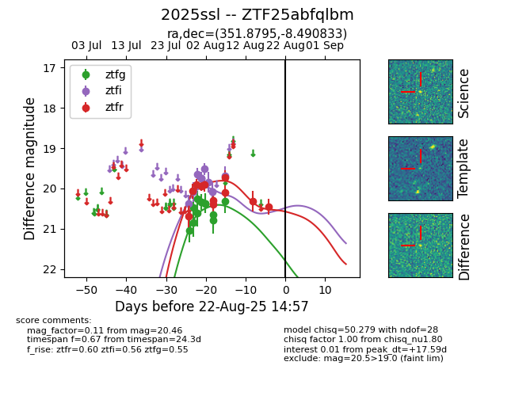

Target 2025ssl at 2025-08-22 15:46, see:
FINK: fink-portal.org/ZTF25abfqlbm
Lasair: lasair-ztf.lsst.ac.uk/objects/ZTF25abfqlbm
ALeRCE: alerce.online/object/ZTF25abfqlbm
TNS: wis-tns.org/object/2025ssl
YSE: ziggy.ucolick.org/yse/transient_detail/2025ssl
alt names
ZTF25abfqlbm (ztf,alerce)
2025ssl (tns,yse)
coordinates:
equatorial (ra, dec) = (351.8795,-8.49083)
galactic (l, b) = (72.2163,-62.77358)
photometry
last ztfg=20.32, ztfi=19.68, ztfr=20.46
12 ztfg, 10 ztfi, 11 ztfr detections
